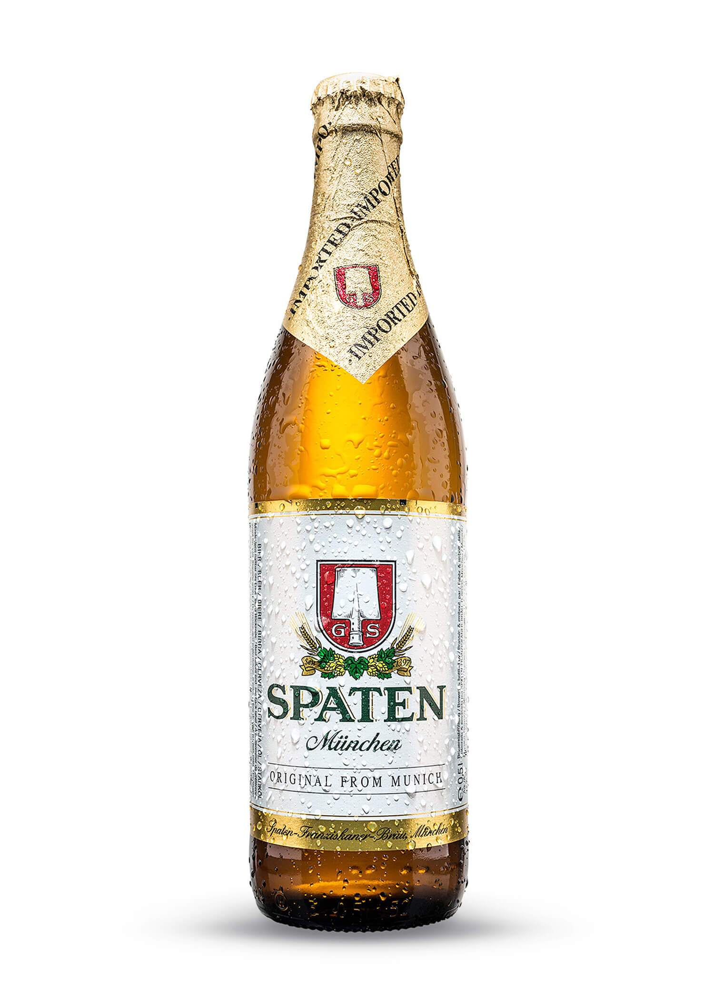

Spaten Helles.

Spaten Helles
Spaten es una de las marcas cerveceras más identificativas de la ciudad de Munich y, por lo tanto, con su gran festival cervecero Oktoberfest. Esta Spaten Hell es, como podemos esperar, una Munich Helles Lager de libro. Llamada Münchner Hell en Alemania, München en Gran Bretaña y Premium en Norte América. Sensación de cuerpo ligero, buena carbonatación, textura aterciopelada, muy bebible y con un final suave y amable.
Vista: Color amarillo dorado, brillante, completamente traslúcida, con una buena espuma blanca, compacta y persistente.

Olfato: En aroma se desprnden notas muy limpias de cereal, malta, con ligeros aportes herbales de los lúpulos.

Gusto: En boca es dulce, maltosa, terminando en un amargor intenso y prolongado.